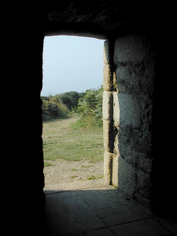

|

|
La maison fait face à la mer et ses murs
d'un mètre d'épaisseur ont bien
résisté au temps. A l'intérieur une
immense cheminée assurait le confort. Le toit en
granit a été restauré récemment.
Autrefois ces buissons n'existaient pas et la vue
était dégagée.
Le jour où nous avons visité une
brume de beau temps noyait l'horizon.
Si vous êtes
entré directement : entrée du site
ici, accueil ici
|